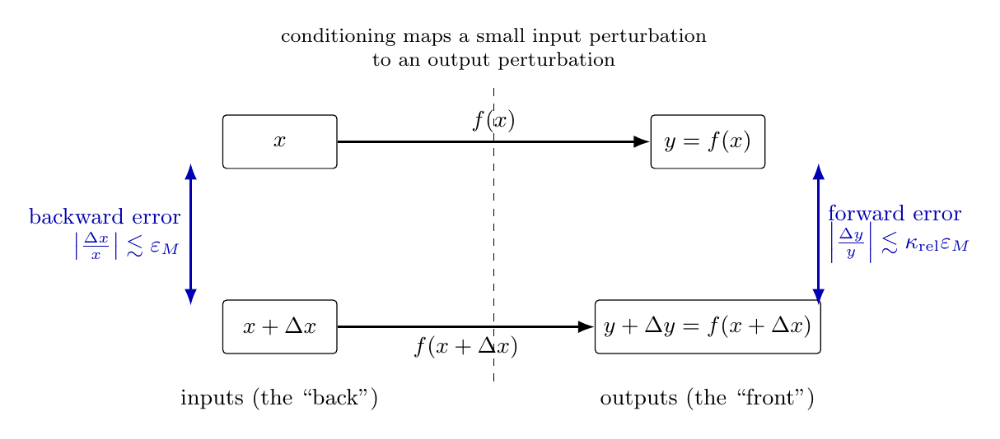
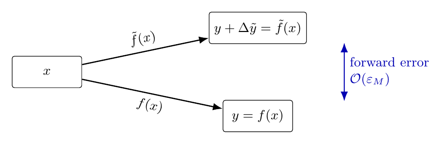
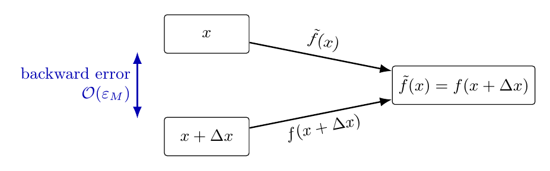
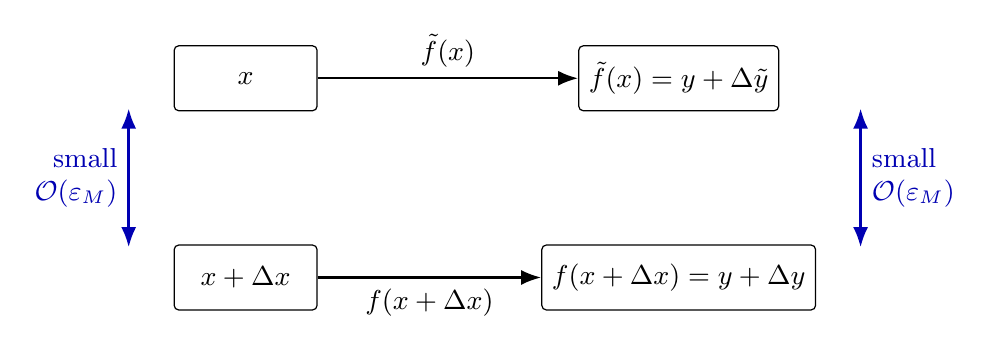
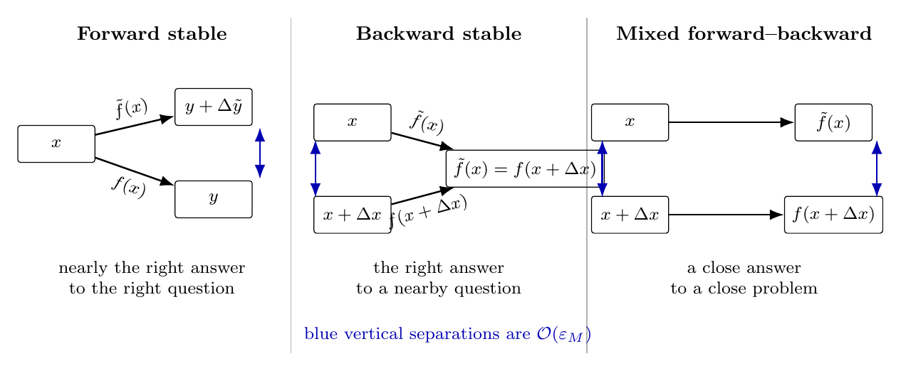

4. Stability#
Having looked at the source of numerical error being:
the finite-precision representation computers use for real numbers,
and the property of problems to amplify input errors by their relative condition number, we now turn our attention to the one thing we do have control over: what algorithm we use to solve a given problem, and how the algorithm itself affects errors.
Additional resource
Corless & Fillion: A graduate introduction to numerical methods, Ch. 1.4
4.1 Algorithms and an intuitive definition of stability#
Using notation from our definition of the condition number, there is no perfect implementation of a problem \(f\). We replace it with a realistic algorithm \(\tilde f\), that maps inputs to outputs just like \(f\).
An algorithm
solves a problem,
has steps unambiguously defined in terms of known operations,
and uses a finite number of steps.
Some algorithms are better than others. Loosely, a stable algorithm returns results as accurately as the problem allows; there is no getting around a large relative condition number \(\kappa_{\mathrm{rel}}\).
We, however, distinguish between different types of stability, and therefore different types of error.
4.2 Types of error#
It is useful to think of error on the input side as error at the “back” (this will be called backward error), and error on the output side as error at the “front” (forward error).
In an ideal world, an unperturbed real input \(x\in\mathbb R\) would be mapped by the exact problem to the exact answer
Computers, however, use floating-point / finite-precision representation. Merely converting the real input to floating point introduces a small perturbation,
{kind=link}

4.3 Types of stability#
4.3.1 Forward stability#
Now add the final complication: replace the perfect evaluation of \(f\) by the realistic algorithm \(\tilde f\). Even when the algorithm is given the unperturbed input \(x\), its answer may differ from the exact answer by \(\Delta\tilde y\):
The first notion of stability is defined directly in terms of this error, and is therefore called forward stability.
An algorithm \(\tilde f\) is forward stable if, for every \(x\),
{kind=link}

Question
In light of what we know about conditioning, is forward stability reasonable to expect or demand?
Answer: no, not in general. If the problem is ill-conditioned, then any computer algorithm necessarily has to represent the real input \(x\) by a nearby floating-point number \(x+\Delta x\). A large \(\kappa_{\mathrm{rel}}\) can amplify the small relative input perturbation
So, if a small forward error cannot reasonably be demanded, we can instead ask for a small backward error.
4.3.2 Backward stability#
The question now is: is there a nearby input \(x+\Delta x\), close to the unperturbed input \(x\), for which the exact problem produces the same answer as the algorithm?
An algorithm \(\tilde f\) is backward stable if, for every \(x\),
{kind=link}

Think of a backward stable algorithm as one producing the right answer to nearly the right problem, and a forward stable algorithm as one that produces nearly the right answer to the right problem.
Backward stability is a strict requirement, but it is often a reasonable one to expect (and sometimes the best we can hope for).
Example
Consider floating-point addition for real inputs \(x_1,x_2\in\mathbb R\). Let the exact problem be
All computer algorithms have to convert the input real number to floating point first. Write
\[ x_1\longrightarrow x_1(1+\delta x_1), \qquad x_2\longrightarrow x_2(1+\delta x_2), \]where the conversion roundoff errors satisfy\[ |\delta x_1|,\ |\delta x_2|\leq \varepsilon_M \qquad (=\mathcal O(\varepsilon_M)). \]Then, the computer performs floating point addition. The result is itself a floating point number, and is not necessarily exactly the sum of its two floating-point operands (even if they are two real numbers that are exactly represented as floating point numbers!). Therefore, for another roundoff error \(\delta=\mathcal O(\varepsilon_M)\),
\[ \tilde f(x_1,x_2) =(1+\delta)\left[x_1(1+\delta x_1 )+x_2(1+ \delta x_2)\right]. \]In shorthand,\[ \tilde f(x_1,x_2)=\tilde{x}_1\oplus \tilde{x}_2. \]
Question
Is floating-point addition backward stable?
For backward stability we want to know whether it is always possible to write
Expand the floating-point result:
The same logic applies to floating-point subtraction and to most other elementary operations - but not all of them.
4.3.3 Mixed forward-backward stability#
Finally, consider a third and more lenient notion of stability. This is often what people have in mind when they say that an algorithm is simply numerically stable.
An algorithm \(\tilde f\) is stable in the mixed forward-backward sense if, for every \(x\), there exists a nearby input \(x+\Delta x\) such that
{kind=link}

We can interpret a mixed forward-backward stable algorithm as one that produces nearly the right answer to nearly the right question. Sometimes - often - this is the best we can hope for.
4.3.4 Comparison#
Let’s compare these three types of stability, growing more less strict from left to right.
{kind=link}

In summary, if the algorithmforward stable: it produces nearly the right answer for the (exact same) question. This can be an unreasonable demand for an ill-conditioned problem. If it is backward stable, the algorithm produces the right answer to a nearby question. This is a strong and very useful requirement, but it is not always possible. Finally, a mixed forward-backward stable algorithm produces a close answer to a close problem. This is the most lenient of the three and is often attainable.
Exercises
Consider the machine algorithm (that uses floating-point representation) for subtracting \(1\) from a real number. You’ll investigate whether it’s stable and backwards stable.
a) The exact problem (a mapping \(f: X \mapsto Y\)) is \( f(x) = 1 - x. \) Write down in words the steps of the machine algorithm \(\tilde{f}\) that computes the difference. Express \(\tilde{f}(x)\) in terms of the input \(x\).
b) What does \(\tilde{f}(x)\) have to equal, in terms of a floating-point number close to \(x\) denoted \(\tilde{x},\) for the algorithm to be backwards stable?
c) By expressing \(\tilde{x}\) in terms of \(x\) and some small relative roundoff error \(\varepsilon\) (\(|\varepsilon| \leq \mu_M\)), eliminate \(\tilde{x}\) from the above result. To first order in small quantities, what does \(\varepsilon\) have to equal for backwards stability? Is this \(\varepsilon\) always \(\mathcal{O}(\mu_M)\) (i.e. for all \(x\), uniformly)? What does this mean for the backwards stability of this algorithm?
d) What is the condition for mixed forward-backward stability (or just “stability”) in terms of \(f\), \(\tilde{f}\), \(x\), and \(\tilde{x}\)?
e) Is this algorithm stable in the mixed forward-backward sense? Show your work.
Let \( f(x) = \frac{e^x-1}{x}.\)
a) Find the relative condition number of \(f\), call it \(\kappa_f\). What is the maximum of \(\kappa_f\) over \(-1 \leq x \leq 1\)? (You can simply plot it and read off the maximum, or find it analytically.)
b) Use the “obvious” algorithm
(np.exp(x) - 1)/xto compute \(f(x)\) at\[ x = 10^{-2},10^{-3},10^{-4},\ldots,10^{-11}.\]c) Create a second algorithm using the first 8 terms of the Taylor expansion of \(e^x\) around \(0\), and evaluate it at the same values of \(x\) as in part b).
c) Make an array of the relative difference between the two algorithms as a function of \(x\). Plot it. Which algorithm is more accurate, and why?
The (20th order) Wilkinson polynomial is defined as
\[ p(x) = (x-1)(x-2)\cdots(x-20). \]a) Create the polynomial \(p\) with the
numpy.polynomial.Polynomial.fromroots(...)command.b) Now let’s pretend we don’t know its roots: generate and store the roots using
p.roots(). Fill an array with the relative error values of these numerically acquired roots. If we define our algorithm as “finding the roots of a polynomial given its coefficients”, then what type of error does this array represent?c) Take the numerically evaluated roots, and use them to define a new polynomial, \(q(x)\). Use the command
q.convert().coefto obtain an array of its coefficients. Compare these to the coefficients of \(p(x)\) and compute the relative error on the numerically generated coefficients. What type of error does the resulting array represent?d) What can you then say about the type of stability of the “rootfinding from coefficients” algorithm? Can it be forward stable? Backward stable? Stable in the mixed sense?